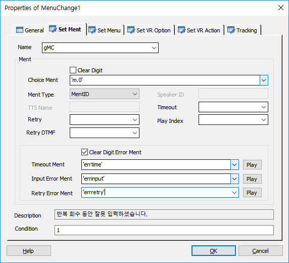
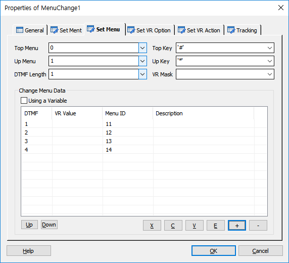
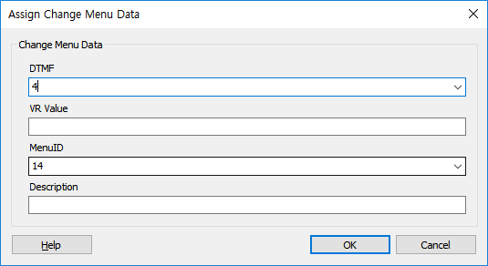
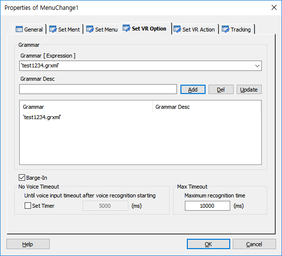
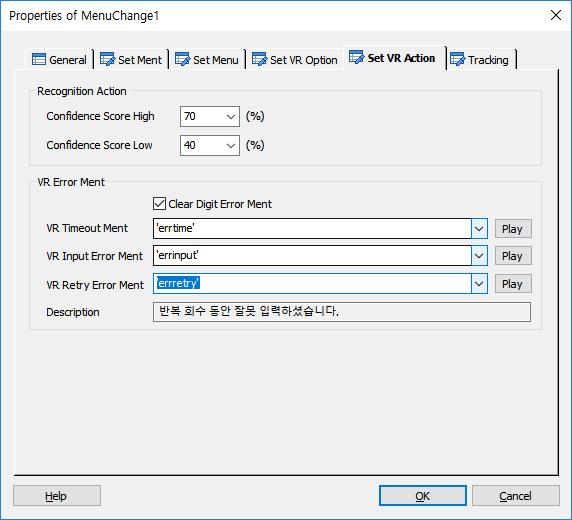
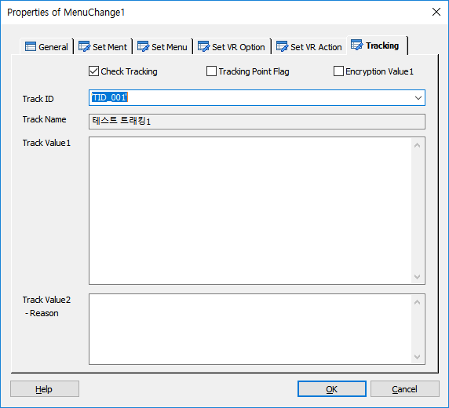

호출된 메뉴 시나리오에서 DefineMenu 에서 설정된 하위 메뉴를 실시간으로 바꾸어 설정 합니다. DefineMenu에서 설정된 항목의 실행 순서는 CaptionMent가 Play후 Menu. Scenario의 설정된 메뉴 시나리오가 호출되고 그 후에 Choice Ment가 Play됩니다. 이때, 호출된 메뉴 시나리오에서 MenuChange를 사용하여 하위 메뉴의 메뉴 항목과 멘트를 바꾸어 제공하여 사용자로 하여금 바꿔진 메뉴에서 메뉴를 선택하게 합니다.
ICON

PROPERTIES
 Set Ment
Set Ment

Name : 이름을 지정 합니다.
Ment
Clear Digit Check Box : 재생 전에 디지트 버퍼를 삭제 할지를 설정 합니다.(재생 전에 발생된 디지트를 버퍼에서 삭제 하지 않으면 재생 하려고 하는 멘트가 바로 중단 됩니다)
Choice Ment : 메뉴 선택멘트를 지정 합니다.
Ment Type : 멘트의 유형을 설정합니다.(MentID, TTS-KSC5601, TTS-Stream, TTS-File)
Speaker ID : Ment Type이 TTS-Stream, TTS-File이면 Speaker ID 를 설정하여 TTS의 화자를 선택할 수 있습니다.
TTS Name : Ment Type이 TTS-Stream, TTS-File이면 TTS Name 을 설정하여 TTS 서버를 선택할 수 있습니다.(값을 지정하지 않으면 기본 TTS 서버로 처리 됩니다.)
Timeout : 메뉴 입력 Timeout시간을 지정 합니다.(단위. second)
Retry : Timeout 또는 입력 오류 시 재시도 횟수를 지정 합니다.
Play Index : Timeout-Index로써 선택 멘트가 재생된 후 DTMF의 입력이 없을 경우 Play Index를 지정 하여 그 인덱스의 멘트를 재생 할 수 있습니다. Play Index란 선택 멘트의 Ment항목에 멘트를 설정할 때 여러개의 멘트를 설정 할 수 있는데 첫번째 부터 순서적으로 1 베이스로 인덱스가 설정됩니다.(Ment 항목 가변 멘트 설정의 예 : 'ment1','ment2','ment3' - 멘트는 쉼표( , )로 나누며 변수와 문자를 같이 쓸 수는 없습니다)
Retry DTMF : 선택 멘트를 재청취 하기위한 DTMF 값입니다.
Clear Digit Error Ment Check Box : Error Ment Play 시에 입력된 DTMF를 버퍼에서 제거하여 Error Ment가 Skip되지 않도록 합니다.
Timeout Ment : Timeout 시 재생 할 멘트를 지정 합니다.
Input Error Ment : 입력오류 시 재생 할 멘트를 지정 합니다.
Retry Error Ment : Retry 횟수 오류 시 재생 할 멘트를 지정 합니다.
Play Button : Ment 항목에 설정된 멘트를 재생 합니다.
Stop Button : 재생 중인 멘트를 중지 합니다.
Description : Timeout Ment, Input Error Ment, Retry Error Ment 설정 시 멘트 설명이 있을 경우 표시 합니다.
Condition : 실행 조건을 지정 합니다.
 Set Menu
Set Menu

Top Menu : Top Key를 눌렀을 때 이동할 메뉴 ID를 지정 합니다.
Top Key : Top Menu로 이동할 디지트를 지정 합니다.
Up Menu : Up Key를 눌렀을 때 이동할 메뉴 ID를 지정 합니다.
Up Key : Up Menu로 이동할 디지트를 지정 합니다.
DTMF Length : 입력 받을 DTMF값의 길이를 지정 합니다.
VR Mask : 정의된 음성인식 인식어 리스트 아이디를 지정 합니다.(Change Menu Data와 함께 인식된 단어에 대하여 비교후 지정한 메뉴로 분기 합니다.)
Change Menu Data
· 실시간 교체할 메뉴를 설정 합니다.
Using a Variable Check Box : DTMF와 Menu ID에 변수 허용 여부를 설정 합니다.

DTMF : 메뉴가 선택 받을 DTMF값을 지정 합니다.(선택 DTMF가 2자리 이상일 경우 직접 입력 합니다)
VR Value : 인식결과의 문자와 비교하기 위한 음성인식 값입니다.
Menu ID : 메뉴가 선택 받았을 경우 실행할 메뉴의 ID를 설정 합니다.(메뉴의 ID는 DefineMenu에 설정된 ID 입니다)
Description : 각 메뉴의 내용을 설명 합니다.
Up Button : 선택한 메뉴를 위로 이동합니다.
Down Button : 선택한 메뉴를 아래로 이동 합니다.
X Button : 선택한 리스트를 잘라냅니다.(Ctrl+X)
C Button : 선택한 리스트의 내용을 복사 합니다.(Ctrl+C)
V Button : 복사한 리스트의 내용을 붙여넣기 합니다.(Ctrl+V)
E Button : 선택한 메뉴의 내용을 갱신 합니다.(수정 창 팝업)
+ Button : 메뉴를 추가 합니다.(추가 창 팝업)
- Button : 선택된 메뉴를 삭제 합니다.
 Set VR Option
Set VR Option

Grammar
· 음성인식을 하기 위한 그래머 를 지정 합니다.
Grammar [ Expression ] : 음성인식 그래머를 지정 합니다. 그래머는 문자형으로 입력 할 경우 여러개의 그래머를 리스트에 지정 가능합니다. 변수형으로 지정할 경우는 하나만 가능 합니다. 대신 변수에 여러 개의 그래머를 구분자 "|" 를 가지고 미리 지정 가능 합니다. 단, 문자형과 변수형은 리스트에 같이 넣을 수 없습니다.(변수에 여러개 의 그래머 지정 시 예 : 'file:test1.grxml | file:test2.grxml | file:test3.grxml')
♣ 그래머 타입에 따른 그래머 입력 방법
file - Nuance Engine 이 설치된 장비내에 위치하는 Grammar
builtin - 설치된 언어팩에 내장된 Grammar(각 언어팩에 첨부된 레퍼런스 참조. 한글팩의 경우 Supplement - Korean ko-KR.pdf 참조)
mcmfile - MCM이 설치된 장비에 위치하는 Grammar(비권장)
사용 시에는 그래머 앞에 사용하고 ":"으로 구분한다.
사용 예 : 'file:testGram.grxml', 'builtin:grammar/currency?language=ko-KR', 'mcmfile:testGram.grxml'
Grammar Desc : 지정한 그래머의 설명을 입력 합니다.
Add Button : 지정한 그래머를 그래머 리스트에 추가 합니다.(문자형으로 지정시 여러 개, 변수형으로 지정시 한개 만 지정 가능)
Del Button : 선택한 그래머를 삭제 합니다.
Update Button : 선택한 그래머의 내용을 갱신 합니다.
Barge-in Check Box : 음성인식 시 Barge-In 을 처리할 것인지 유무를 지정 합니다.
No Voice Timer
· 음성인식 서버가 음성인식을 시작 한 후 음성이 입력 되기 까지의 타입아웃을 지정 합니다. 이 값은 지정 하지 않으면 서버 기본 타임아웃이 적용 됩니다.(milisecond 단위)
Set Timer Check Box : No Voice Timer 사용 유무를 지정 합니다.
Max Timeout
· 음성인식 서버가 음성인식을 시작 한 후 인식의 결과가 나오기 까지의 최대 시간을 지정 합니다.(milisecond 단위이며, 기본 값은 10초 입니다)
 Set VR Action
Set VR Action

Recognition Action
· 음성인식 결과를 처리 합니다.
Confidence Score High : 음성인식 신뢰도 높은 값을 지정 합니다.(인식성공으로 처리 하거나 사용자 Confirm 을 받을 때 사용)
Confidence Score Low : 음성인식 신뢰도 낮은 값을 지정 합니다.(인식실패로 처리할 때 사용)
VR Error Ment
Clear Digit Error Ment Check Box : Error Ment Play 시에 입력된 DTMF를 버퍼에서 제거하여 Error Ment가 Skip되지 않도록 합니다.(음성인식)
VR Timeout Ment : Timeout 시 재생 할 멘트
VR Input Error Ment : 입력오류 시 재생 할 멘트
VR Retry Error Ment : Retry 횟수 오류 시 재생 할 멘트
Play Button : Ment 항목에 설정된 멘트를 재생 합니다.
Stop Button : 재생 중인 멘트를 중지 합니다.
Description : VR Timeout Ment, VR Input Error Ment, VR Retry Error Ment 설정 시 멘트 설명이 있을 경우 표시 함
 Tracking
Tracking

트래킹을 처리합니다.
Check Tracking Check Box : Tracking을 사용 할 것인지를 체크합니다.
Tracking Point Flag Check Box : 특별한 Tracking Flag를 설정하여 SWAT에서 트래킹 시에 이 플래그가 설정된 항목만 트래킹 할 수 있습니다.
Encryption Value1 Check Box : Track Value1 속성 데이터에 대해서 암호화 처리를 합니다.
Track ID : 정의한 Track ID를 선택합니다.
- DefineTrack Item에 정의된 Track ID가 콤보박스 리스트로 제공됩니다.(Type이 없거나, MenuChange인 경우)
Track Name : Track ID를 선택하면 같이 정의된 이름을 출력합니다.(SWAT에서 이 이름으로 트랙킹 시에 사용합니다.)
Track Value1 : 트래킹 시에 사용할 값을 입력 합니다.
Track Value2 :트래킹 시에 사용할 값을 입력 합니다.(결과에 대한 Reason값)
RESULT
· 연관 세션 변수
session.menu.vr_mask : 메뉴트리 음성인식 인식어 마스크
session.menu.vr_maskid : 메뉴트리 음성인식 추가 인식어 마스크(정의된 음성인식 마스크 아이디)
session.menu.vr_grammar : 메뉴트리 음성인식 그래머(리스트)
session.menu.vr_completeconf : 메뉴트리 음성인식 성공으로 처리하는 신뢰도 값
session.menu.vr_bargein : 메뉴트리 음성인식 바진 여부
session.menu.vr_novoicetimer : 메뉴트리 음성인 묵음 타임아웃 여부
session.menu.vr_novoicetimeout : 메뉴트리 음성인식 묵음 타임아웃 시간
session.menu.vr_maxtimeout : 메뉴트리 음성인식 최대 인식 타임 아웃 시간
RELATED